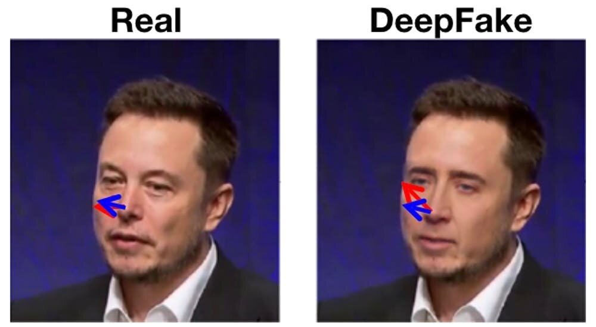
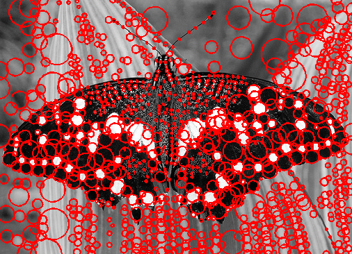
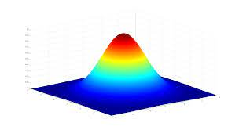

DeepFake Detection with XAI
Classify deepfakes with Explainable AI
I want to contribute to the world of AI and Data Science.
I am Vikram from Pune, India. I am a master's student at NC State University in Electrical and Computer Engineering Department focusing on Machine Learning. I have completed my Bachelors degree in Electronics and Telecommunication Engineering from University of Pune. Before joining NC State, I was working as an Associate Software Engineer at Accenture, India in the domains of ML/NLP and Backend development. My research interests include AI - fusion of Vision and Language, Multimodal AI, Generative AI, Large Foundation Models, and Explainable AI.
In my spare time, I watch movies and anime. I like to play and watch Football. I write about AI and Data Science, here you can find my Blogs.
I currently work as a Data Science Consultant with Data and Visualization Services at NC State University where I provide consultations to students/faculty on Python, Machine Learning and GIT. (Jan 23 - Present)
I also volunteer in ARoS Lab research to detect and classify the damaged and healthy leaves of St. Augastine turfgrass, for that I am implementing object detection and image segmentation algorithms with Deep Learning. (Jan 23 - Present)
I was working as Associate Software Engineer at Accenture, India where I built, developed and tested ML/NLP models - classification, recommendation systems, NER, text-summarization. I was responsible for creating ML APIs with Django and Python and deployment with Docker and Kubernetes on Azure cloud. I was also working in backend development with C#, .NET and MicrosoftSQLServer. (May 21 - June 22)
My projects revolve around Machine Learning, Computer Vision, and NLP. Check out my GitHub for more projects!

Classify deepfakes with Explainable AI
Time Series Analysis using LSTM

Laplacian Blob Detector with Scale space and NMS

Convergence Test of Random Variables for various distributions